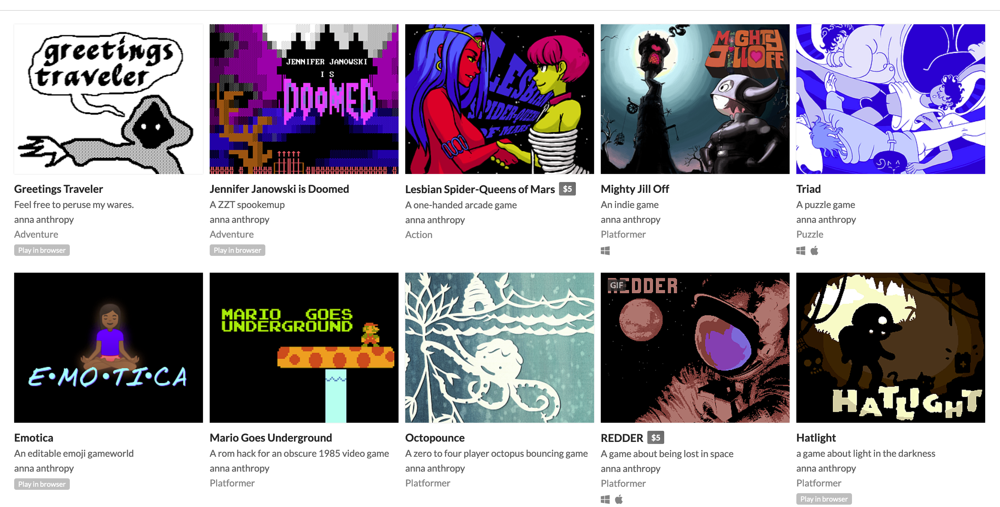
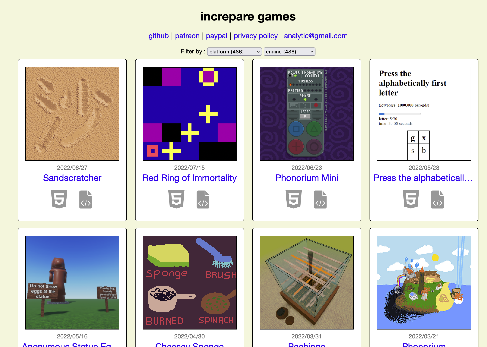

a dance of fire and ice
we are playing like designers (Extra Credits)
Some fun old designers and games, these mostly indies make games that we might be able to make:

anna anthropy: https://w.itch.io digital games here: https://itch.io/c/254078/digital-games

http://www.increpare.com a prolific genius indie developer
QWOP! hardest video game ever, race someone... (that would be emergent!) http://www.foddy.net/Athletics.html
internet arcade, classic arcade games played in modern browsers: https://archive.org/details/internetarcade
and some games lost with flash:
Don't shit your pants pico 8 port
Here are some of Paolo's recommendations from years past and his main art site.
http://www.molleindustria.org/ - some terrific games here, some offensive some thought provoking
- 2012 http://www.molleindustria.org/blog/molleindustrias-top-games-of-2012/
- 2013 http://www.molleindustria.org/blog/molleindustrias-highlights-from-2013/
- 2014 http://www.molleindustria.org/blog/molleindustrias-highlights-from-2014/
- 2015 http://www.molleindustria.org/blog/top-ten-2015-games-you-dont-have-to-play/
- 2016 http://www.molleindustria.org/blog/molleindustrias-highlights-from-2016/
- 2017 http://www.molleindustria.org/blog/top-2017-games-that-waste-your-time-properly/
- 2018 http://www.molleindustria.org/blog/molleindustrias-highlights-from-2018/
- 2019 https://www.molleindustria.org/blog/molleindustrias-highlights-from-2019/
play games made by sjsu game dev: https://sjsugamedev.itch.io/
fall 2024: https://itch.io/c/5146205/fall-2024-art-cs-108
spring 2024:https://itch.io/c/4367647/artcs-108-s24
fall 2023: https://itch.io/c/3836692/fall-2023-artcs-108-plus
spring 2023: https://itch.io/c/3326805/artcs-108-spring-23
fall 2022: https://itch.io/c/2942431/fall-108-2022
spring 2022: https://itch.io/c/2488457/spring-22-games
fall 2021: https://itch.io/c/1943305/fall-2021-artcs-108
spring 2021: https://itch.io/c/1591148/spr2021
fall 2020: https://itch.io/c/1296519/fall2020
spring 2020: https://itch.io/c/856270/artcs108-spring2020
fall 19: https://itch.io/c/673986/fall-2019-artcs-108
spring 19: https://itch.io/c/532730/art-cs-108-spring-2019
https://poison-apple-tales.itch.io/dont-take-this-risk
"Hello? This is...this is the suicide hotline, yes?"
Oops, wrong number. But you may not want to tell that to the man on the other side of the phone. How will you, a young woman, defuse this suicidal crisis? Oh, and better be careful not to tell him you love him.
https://fromsmiling.itch.io/osteotic-bypass
"Why am I just a floating pile of flesh?"
"Why do my limbs bend every which way?"
"How did this happen to me?"
part puzzle game, and reminiscent of a japanese game show...
https://madguy.itch.io/streets-of-rogue
Streets of Rogue is a rogue-lite about player choice, freedom, and anarchic fun. The game takes inspiration from fast-paced top-down rogue-lites like Binding of Isaac and Nuclear Throne, and adds free-form, experimentation-driven, emergent gameplay elements of RPGs like Deus Ex.
https://rose-engine.itch.io/manbat - (online) firefox or chrome
https://powerhoof.itch.io/the-maitre-d
- As the Maître D' at a fancy French brasserie, it's your job to ensure patrons encounter the best service imaginable. Worm your way in with the hoity-toity by showing them their seats!
https://dukope.itch.io/return-of-the-obra-dinn
In 1802, the merchant ship "Obra Dinn" set out from London for the Orient with over 200 tons of trade goods. Six months later it hadn't met its rendezvous point at the Cape of Good Hope and was declared lost at sea. Early this morning of October 14th, 1808, the Obra Dinn drifted into port with sails damaged and no visible crew. As insurance adjustor for the East India Company's London Office, find means to board the ship and recover the captain's logbook for assessment.
1) game #1 : Dr. Langeskov, The Tiger, and The Terribly Cursed Emerald: A Whirlwind Heist
By the author of the Stanley Parable, this game is available for free on Steam. A 15 minute heist game by Crows Crows Crows & Directed by William Pugh (The Stanley Parable). Slip into the soft-soled shoes of the mastermind responsible for the greatest heist- oh god I can’t do this any more, i’m joining the strike. good luck writing the steam description.
windows, mac
2) game #2: Mobs Inc.
https://pietro-ferrantelli.itch.io/mobs-inc (Links to an external site.)Links to an external site.
[Play on Chrome or Firefox please]
"Mobs, Inc. is hiring new employees ! The dungeon the company has been taking care of, has become so attractive that too many adventurers are visiting it every day.
3) game #3: I woke up next to you again
https://zephyo.itch.io/i-woke-up (Links to an external site.)Links to an external site.
A romance about a more-than-one-night stand;
A psychological thriller about toxic addiction.
game 1) "Everything is going to be OK"
https://alienmelon.itch.io/everything-is-going-to-be-okLinks to an external site.
about half game, half experience
game 2) "Universal Paperclips"
http://www.decisionproblem.com/paperclips/Links to an external site.
online (make sure you have a consistent internet connection)
this may take a while to play
game 3) "Heck Deck"
https://torcado.itch.io/heck-deckLinks to an external site.
online (make sure you have a consistent internet connection)
game jam game (may feel rough)
Game 1 https://brianna-lei.itch.io/butterfly-soupLinks to an external site.
A visual novel about gay asian girls playing baseball and falling in love.
Features:
*except not really, one of them is bi
Game 2 https://tommchenry.itch.io/horse-masterLinks to an external site.
Horse Master: The Game of Horse Mastery challenges players to grow, train, and nurture their own horse from birth in the hopes of earning the most coveted tenured position in the world: Horse Master.
(online, no recommended browser)
Game 3 https://store.steampowered.com/app/200210/Realm_of_the_Mad_God/Links to an external site.
Realm of the Mad God is the first ever free to play Bullet Hell MMO. Team up with dozens of players and battle through the Realm of the Mad God, Oryx. With a retro 8-bit style, Realm is an evolution of traditional MMO gameplay. A dozen classes and hundreds of items to discover means Realm is easy to play but difficult to master. Players can jump in Realm for 5 minutes or stay online for hours because there is nothing to install or download.
Flash Based, on steam (an easy way to get achievements) and on their site.
Game 4 https://www.kingdomofloathing.com/game.phpLinks to an external site.
The Kingdom of Loathing is a free, comical RPG, brought to you by the folks at Asymmetric PublicationsLinks to an external site..An Adventurer is You!
Choose from one of six intoxicating and intoxicated character classes, browser based, turn based. You will have to play several days to do this justice.
Game 1 https://more-mountains.itch.io/shapeshifter-biker
You're a shapeshifter biker, all alone in a desolated world, chased by angry ducks in black trucks. To escape, you need to collect all the Animal Powersscattered across the land, in mysterious blue boxes.
Game 2 https://w.itch.io/interview-a-cat
A twine based browser game by Anna Anthropy.
Game 3 https://teamlazerbeam.itch.io/wrestling-with-emotions
How do you like your pro wrestlers? Whether you like them big and hairy, mysterious and deadly, oiled-up and angry or friendly and hideously-mutated, we've got the man for you!
Game 4 https://gman0064.itch.io/spectrum
Spectrum is a puzzle platformer that takes inspiration from games like Super Meat Boy and Thomas Was Alone. The game's unique mechanics mainly focus around light, where you use a Fog-of-War like method to explore the level and find the exit, or the Prism. The entire level is invisible, except for a ring of light around your character, and certain enemies/objectives, giving a unique sense of difficulty to the game. There are many different levels to solve, with each level consisting of multiple colored Prism Fragments to collect that equal your score.
Game 5 https://flamebait.itch.io/passpartout-the-one-man-band
Compose your own music and perform it in front of strangers on the street! Adhere to the feedback from your listeners and bewitch them with your catchy beats and melodies!
Game 3:
"Oh no, I fell asleep on the train… Where am I?"
https://gocolumbia.itch.io/exnihilation
Password: exnil
Web based puzzle game from October Jam
Matter and antimatter pairs appear out of the void
Manipulate them, bond them, and annihilate them to create the requested molecules or anti-molecules, and send them off the top and bottom of the screen
Designed with touchscreens in mind, but should work with mouse as well
https://codetorex.itch.io/pathfinder
Pathfinder: Last Stand is a survival based arcade game, where you must fend off many enemies that hide in the shadows. Using light to your advantage to help spot where enemies are is critical to your survival in these unforgiving badlands.
Web based
Win/MAC/Linux download
https://thephilipcal.itch.io/lastminutelove
In this Adventure Dating Sim you play an old person who doesn't want to die alone. Romance any of the 4 residents or the nurse. Bring them items they've lost or help them with their troubles. Will you be able to find Love?
Web/Win/MAC/Linux
https://graebor.itch.io/sort-the-court
Simulation
You are the ruler and make decisions to benefit or harm your citizens.
Web based
https://zephyo.itch.io/missed-message
Visual Novel
"goth gf's iPhone" airdrops you a photo.
Accept or decline?
A romance / horror story about life, death, and memes.
How will you spend time?
**Warning: contains mentions of suicide and self-harm.**
Win/MAC/Linux
Game 1:
Game 2:
Game 3:
Game 4:
Game 5:
Download: WIN 23 MB / MAC 22 MB
Game 1:
https://thelastorder.itch.io/crater
Crater is a Metroidvania, platformer, action and adventure game in a post apocalyptic world inspired by games like the Fallout saga.
Get into your PowerSuit and explore the devastation of the Sigma Crater.
Play in browser or download (windows?)
Game 2:
https://partnano.itch.io/villager
You are on this island to build a cosy little town for the peeple that want to live here.
Gather wood and stones to build and unlock other buildings. Some produce resources for you, others make your inhabitants happy. Well-fed and happy peeple produce more resources, but keep them hungry or sad and they will leave. They might seem a bit lazy, but without them, buildings won't produce anything!
play online or download
Game 3:
https://sircartaux.itch.io/filled-with-freedom
It was a long drive. You finally arrived.
This is your grandparents' house.
They had lived here for 43 years and now the house is all yours.
Your parents never told you much about them.
You were always wondering who they really were, since you were a kid.
Maybe, today, everything will change...
Game 4:
https://validategame.itch.io/vdate-demo
Set in the Jercy City area, our cast of lovers trudge through the dregs of capitalism - a journey, a transition - a rite-of-passage that leads into uncertain mid-adulthood. On one side but not yet out on the other, 13 playable characters find romance amongst cosplay, trash mixtapes, and even poetry straight from the soul.
Download, note special instructions for Mac
Game 5:
https://lizardfactory.itch.io/ngj2022-misplacedandabandoned
In a world of magic and mystery...
There is a place, shrouded by... Even more mystery...
Hidden behind a waterfall, where no adventurer would ever consider looking...
A place so frightening, it makes ghosts shiver and gives skeletons goosebumps.
A place known only as...
THE GOBLIN LOST AND FOUND DEPARTMENT
play in browser
Game 1:
A sequel to Butterfly Soup, a romantic sports visual novel about gay Asian-American teens playing baseball and falling in love.
Set a few months after the events of the original story, the game switches between the perspectives of Diya, Noelle, Akarsha, and Min-seo as they navigate high school life in the San Francisco Bay Area.
Features:
https://brianna-lei.itch.io/butterfly-soup-2-webandroid-portsLinks to an external site.
Game 2:
"Draw" is a story-rich 2D platformer and an artistic journey of grief and acceptance through the stick-figure doodles of Nathan, a high schooler dealing with the grief of a recently lost friend. Play as "Stickman" and navigate this world of lined paper with puzzles, monsters, and interesting characters, each representing a different person in Nathan's life and a role in his journey of self-sabotage, isolation, depression, eventual acceptance, and recovery.
https://jaygantic.itch.io/drawLinks to an external site.
Game 3:
You were a grandma, but you have died. Can your spirit rescue your cats?
https://teambeanloop.itch.io/six-cats-underLinks to an external site.
Game 4:
https://bearmask.itch.io/lofi-roomLinks to an external site.
Game 5:
Can you help the little peoples achieve their ultimate goal of connection? Can you shake 'em all? Move each hand through various puzzles to reach each other and achieve Handshake nirvana!
https://petpumpkin.itch.io/handshakesLinks to an external site.
Game 1:
http://solarprotocol.net/sunthinking/#pipkinLinks to an external site.
Game 1:
An office sim game inspired by the film "Office Space", made for GBJam 11.
You are an office worker who just wants some space to yourself. Actually you want the whole office. Can you make all your coworkers rage-quit without getting caught?
https://benbarsdell.itch.io/office-spaceLinks to an external site.
Game 2:
In Frog Fractions, the player controls a frog sitting on a lily pad. The frog must use its tongue to attack oncoming insects and protect its fruit, in the vein of Missile Command. Between waves of bug attacks, the player can purchase upgrades such as lock-on targeting, a cybernetic brain, and a flying dragon.
https://twinbeard.itch.io/frog-fractions-game-of-the-decade-editionLinks to an external site.
Game 3:
Due to circumstances beyond the developer's control, you have found yourself in a battle for your soul against the Goddess of Death herself, Kali. Play her tricky dice matching game for the chance to cheat death... at least for a little while longer.
https://ragtaggames.itch.io/dice-with-kaliLinks to an external site.
Game 4:
Can't decide whether to play Minesweeper or Tetris? Why not play both?
Tetrisweeper is a mind-bending fusion of two classic puzzle games that will have you working two parts of your mind at once.
In order to win this game, you'll have to play both Tetris and Minesweeper at the same time.
https://kertisjones.itch.io/tetrisweeperLinks to an external site.
Game 5:
You are a Space Ranger in the Earth Defense Force charged with protecting your home from hostile invaders.
When the leaders of the Galactic Legion decide to make Earth their new Galactic Mining Facility, it's up to YOU to stop the invasion and drive the alien forces out of our solar system.
https://acheronti.itch.io/vector-vendettaLinks to an external site.
Game 1: https://sylvie.itch.io/sylvie-rpg
In a strange world beset by ruin, a woman named Sylvie appears to fight battles.
What will you find in this world?
Game 2: https://notempty.itch.io/trick-or-treat
The treat is candy for kids the trick is monsters.
Mouse Left Button : Click/Pick/Drop
Mouse Right Button or Space : Interact
Game 3: https://jellbot.itch.io/cool-dudes-entropic-door-porium
Get yourself a pair of dimensional doors.
Controls: Left/Right to walk, Z to jump, Up to enter doors, X/Down to pickup objects, X to throw objects, Down to drop objects
Game 4: https://crawl.develz.org/
An open source roguelike adventure through dungeons filled with dangerous monsters in a quest to find the mystifyingly fabulous Orb of Zot. This is using online servers and reminds me of NetHack.
Game 5: https://algebrafalcon.itch.io/time-is-solid-here
A long, yellow hallway. A floating head who talks of monster trucks and places in-between. A painting, three a plenty, each with someone in need of moving on.
Such is the horror puzzle game, Time is Solid Here, recently selected for the Goethe-Institut's Stillstand/Standstill Project Exhibition.
Download or play online.
Game 1: https://sylvie.itch.io/sylvie-rpg
In a strange world beset by ruin, a woman named Sylvie appears to fight battles.
What will you find in this world?
Game 2: https://notempty.itch.io/trick-or-treat
The treat is candy for kids the trick is monsters.
Mouse Left Button : Click/Pick/Drop
Mouse Right Button or Space : Interact
Game 3: https://jellbot.itch.io/cool-dudes-entropic-door-porium
Get yourself a pair of dimensional doors.
Controls: Left/Right to walk, Z to jump, Up to enter doors, X/Down to pickup objects, X to throw objects, Down to drop objects
Game 4: https://crawl.develz.org/
An open source roguelike adventure through dungeons filled with dangerous monsters in a quest to find the mystifyingly fabulous Orb of Zot. This is using online servers and reminds me of NetHack.
Game 5: https://algebrafalcon.itch.io/time-is-solid-here
A long, yellow hallway. A floating head who talks of monster trucks and places in-between. A painting, three a plenty, each with someone in need of moving on.
Such is the horror puzzle game, Time is Solid Here, recently selected for the Goethe-Institut's Stillstand/Standstill Project Exhibition.
Download or play online.
updated 2/25